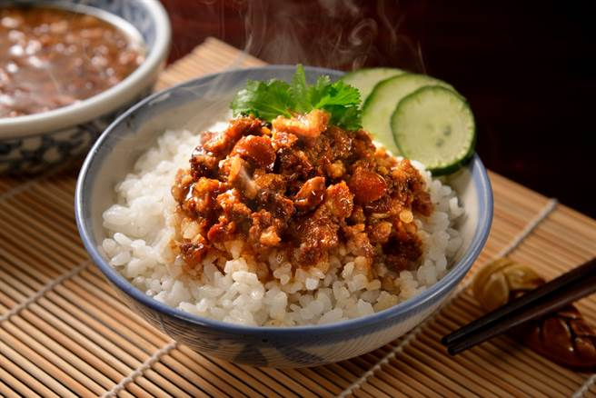
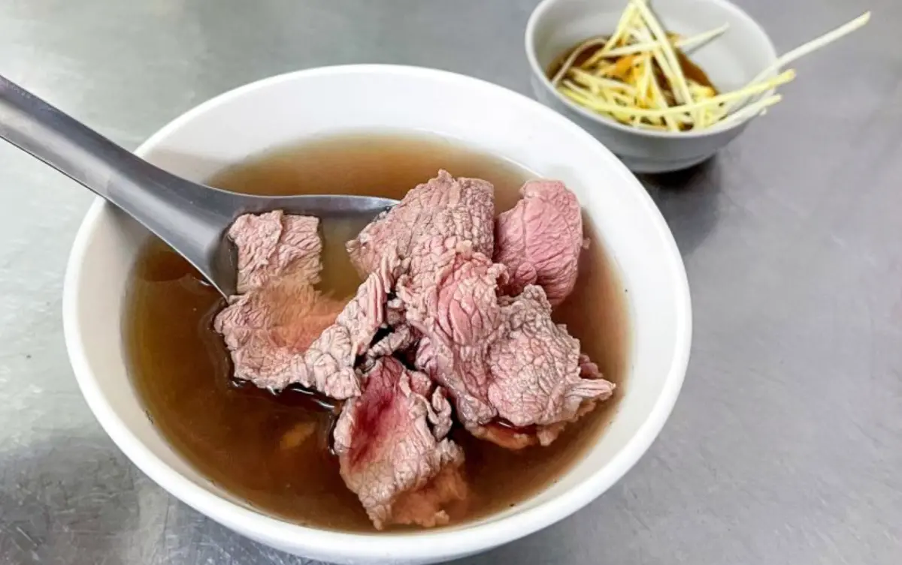

Welcome to Taste of Taiwan
Discover the authentic flavours of Taiwan.
Discover the Flavours of Taiwan



More Taiwanese Food to Explore

Braised Pork Rice
A popular Taiwanese comfort food featuring tender braised pork served over steamed rice.
More Details
Braised Pork Rice, also known as Lu Rou Fan, is one of Taiwan's most beloved comfort foods. It is made with pork slowly simmered in soy sauce, sugar, and aromatic spices until tender. This affordable dish can be found in night markets and traditional restaurants throughout Taiwan.